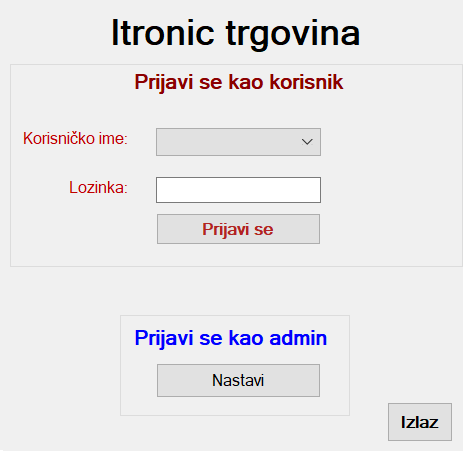

Dobro došli na početni prozor aplikacije Itronic trgovine. Ovo je Vaš prvi korak u radu s aplikacijom Vaše, ali i naše trgovine.
Odaberite opciju pri prijavi. Na raspolaganju imate dvije mogućnosti: Prijavi se kao korisnik ili administrator.
Prijavi se kao korisnik.
Odaberite korisnicko ime korisnika iz padajuće liste i pritisnite gumb Prijavi se.

Prijavi se kao administrator.
Odaberite korisnicko ime administratora iz padajuće liste.
Za napuštanje aplikacije pritisnite gumb Izlaz.